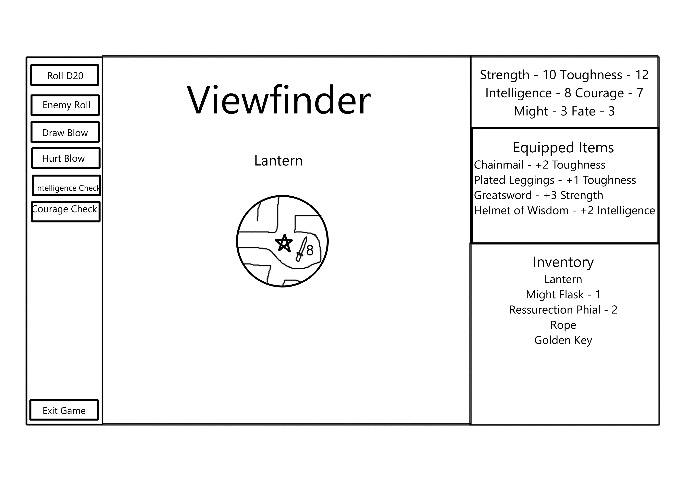

This is the play page. The user is connected via websocket at this point and can see the maze and interact with the game UI.

This is where the AI would help be the "dungeon master" of sorts. This would involve third party calls as people play the game.
This is also where the websocket connection would apply, since the map and viewfinder is updated in real-time, as clients send information to other clients.